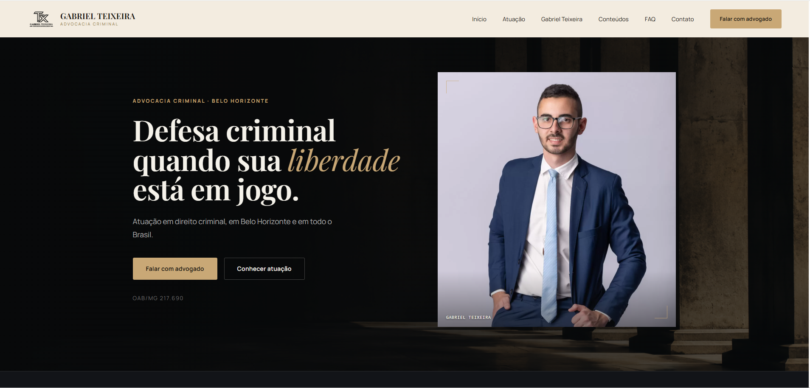
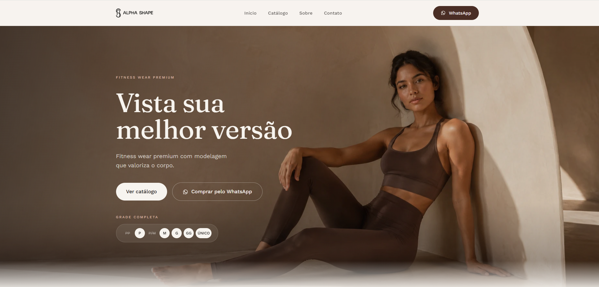
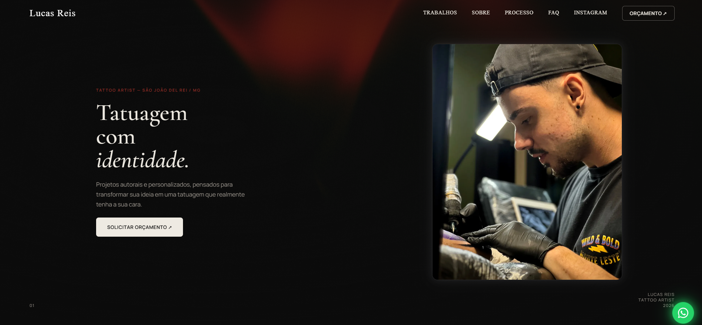
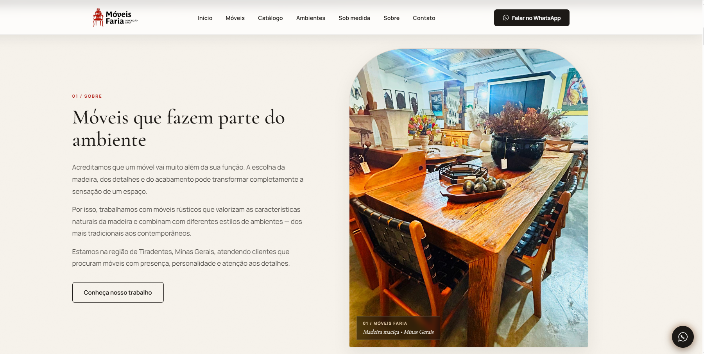
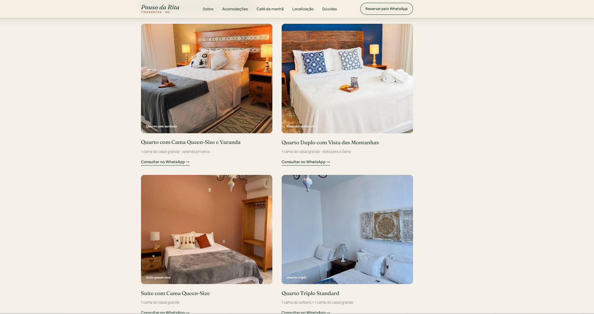
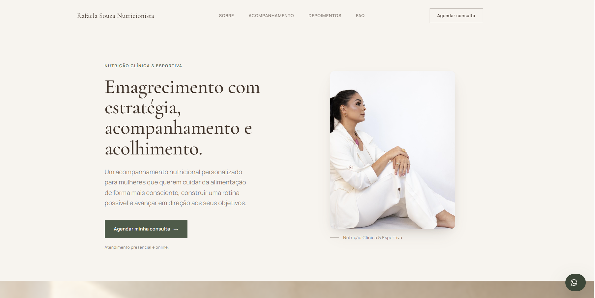

Feito sob medida
Sistemas e sites pensados para o funcionamento real do seu negócio — nada de modelos genéricos.
Sistemas de gestão, sistemas personalizados e sites desenvolvidos para o seu negócio funcionar melhor — sem complicação, sem termos difíceis.
PORTFÓLIO EM MOVIMENTO






Arraste para girar · clique para ver o projeto
DIFERENCIAIS
Cada sistema e cada site é construído para resolver um problema real do seu negócio — não para parecer bonito só na tela.
Sistemas e sites pensados para o funcionamento real do seu negócio — nada de modelos genéricos.
Interfaces diretas, sem complicação, para você e sua equipe usarem no dia a dia sem treinamento.
Código bem estruturado, performance e segurança como padrão — não como extra opcional.
Acompanhamento após a entrega, prontos para ajustar e evoluir junto com o seu negócio.
PROCESSO
Do primeiro contato à entrega, um processo simples e transparente.
Entendemos como sua empresa funciona hoje e onde um sistema ou site pode facilitar o processo.
Estruturamos e construímos a solução sob medida, com foco em funcionar bem desde o primeiro dia.
Você acompanha o andamento e pede os ajustes necessários antes da entrega final.
Sistema ou site no ar, com suporte contínuo para o que vier depois.
SOBRE
A Vertex Desenvolvimento é uma empresa de tecnologia focada em transformar necessidades de empresas em soluções digitais simples, modernas e funcionais.
Trabalhamos com três frentes principais: sistemas de gestão, sistemas personalizados e sites — sem comunicação excessivamente técnica, sem "transformação digital 360º". Só tecnologia pensada para o seu negócio funcionar melhor.
Conversar com a VertexSERVIÇOS
Soluções digitais completas para organizar, personalizar e apresentar o seu negócio.
Desenvolvimento de sistemas para organizar e facilitar processos da empresa: vendas, estoque, clientes, pedidos, usuários e operações internas.
Criação de sistemas desenvolvidos especificamente de acordo com a necessidade e o funcionamento de cada negócio.
Desenvolvimento de sites modernos, profissionais, responsivos e pensados para apresentar empresas, serviços e produtos de forma clara e atrativa.
PROJETOS SELECIONADOS
Uma seleção de projetos digitais desenvolvidos a partir da identidade, do público e dos objetivos de cada marca. De websites institucionais a catálogos digitais, cada interface é pensada para unir design, experiência e estratégia — sem depender de soluções genéricas.
Website Institucional · Advocacia · Posicionamento Profissional
Um site institucional pensado para transmitir autoridade, seriedade e confiança desde o primeiro contato, fugindo da estética genérica comum em páginas jurídicas. A direção visual combina tons escuros, off-white e dourado com tipografia de personalidade e fotografia profissional — conduzindo o visitante da apresentação da atuação até o contato de forma objetiva, sem abrir mão da sofisticação que a área criminal exige.
Catálogo Digital · Moda Fitness · E-commerce Showcase
Mais do que um catálogo de roupas, uma vitrine digital para uma marca de moda fitness feminina que precisava parecer premium. Fotografia em grande escala, composição minimalista e tons terrosos constroem uma experiência inspirada em editoriais de moda, deixando o visitante descobrir as peças antes de seguir direto para a compra pelo WhatsApp — sem a complexidade de um checkout tradicional.
Website Institucional · Portfólio · Tattoo Artist
O trabalho de um tatuador é essencialmente visual — por isso o site precisava funcionar como portfólio, apresentação profissional e canal de orçamento ao mesmo tempo, sem competir com as próprias tatuagens. A resposta foi uma interface escura e editorial, onde contraste, textura e tipografia dão protagonismo aos trabalhos e conduzem naturalmente o visitante da descoberta ao pedido de orçamento.
Catálogo Digital · Móveis & Decoração · Website Institucional
O desafio era apresentar um catálogo com forte apelo visual sem virar uma loja virtual comum, preservando o caráter artesanal da marca. Espaços generosos, composição editorial e fotografia real dos ambientes e produtos deixam a madeira e o acabamento assumirem o protagonismo, enquanto a navegação conduz o visitante direto ao atendimento pelo WhatsApp.
Website para Hospedagem · Turismo · Reservas
Quem procura hospedagem decide com base em confiança, localização e estrutura — o site precisava organizar essas informações sem perder o clima acolhedor de Tiradentes. Paleta em tons naturais, tipografia elegante e fotografias reais apresentam cada acomodação individualmente, conduzindo o visitante da descoberta da pousada direto à reserva pelo WhatsApp.
Website Profissional · Saúde & Bem-estar · Nutrição
Construir autoridade profissional sem soar clínica ou impessoal era o ponto central deste projeto. Tons naturais, áreas generosas de respiro e fotografia profissional apresentam a metodologia de acompanhamento de forma acessível, guiando a visitante da apresentação da nutricionista até o agendamento com a segurança necessária para dar o próximo passo.
VAMOS COMEÇAR?
Vamos entender seu negócio e construir uma solução que realmente funciona. Sem compromisso.